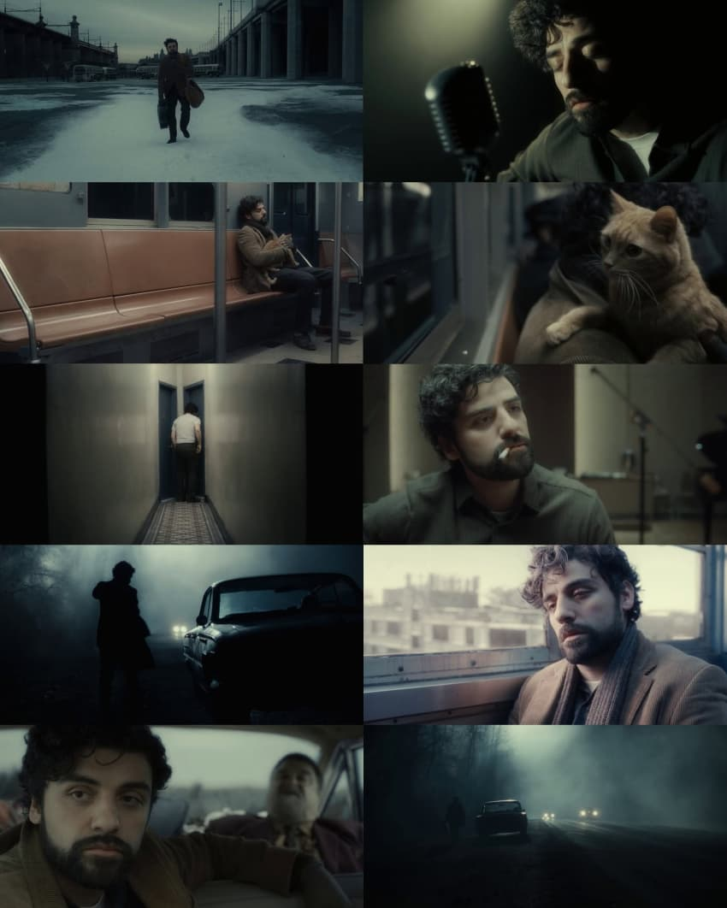
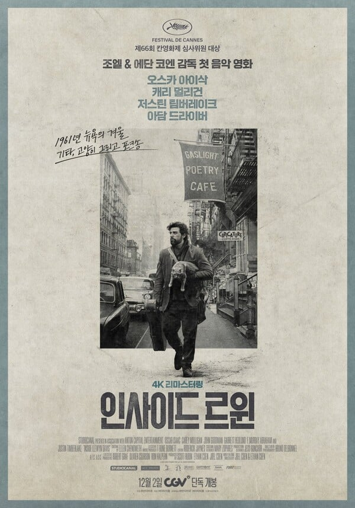
12월2일
코헨 형제 <인사이드 르원>
4K 리마스터링 CGV 단독 재개봉
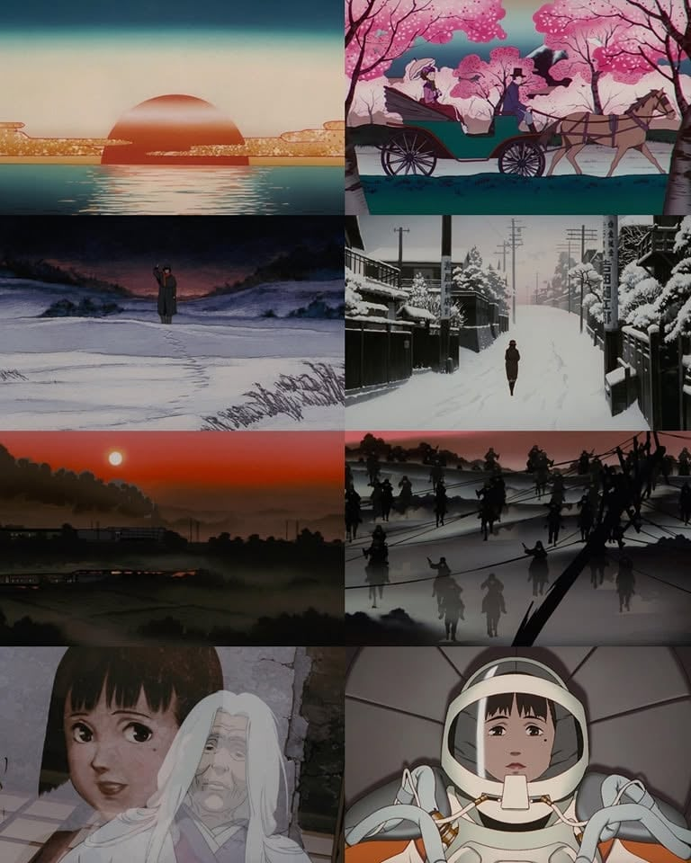
12월2일
콘 사토시 특별전 1부
천년여우 4K 리마스터링 메가박스 단독개봉
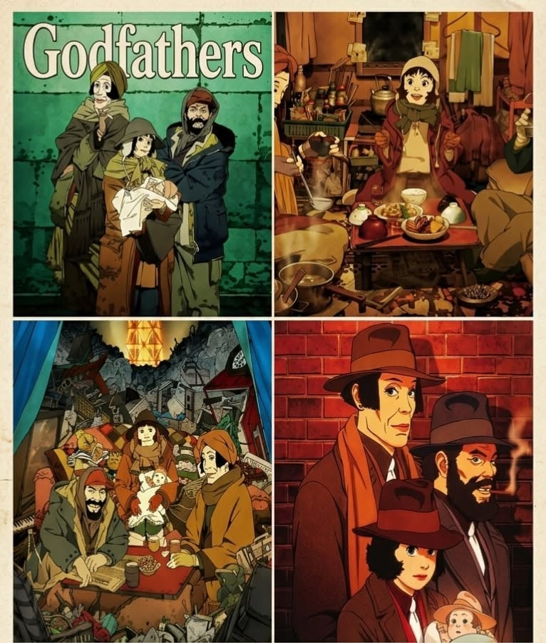
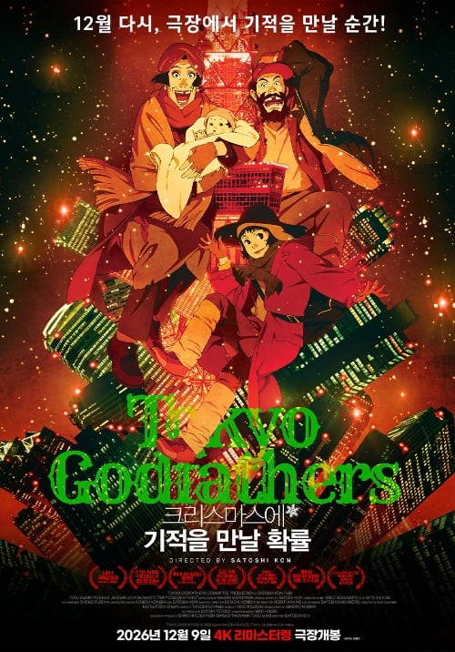
12월9일
콘 사토시 특별전 2부
크리스마스에 기적을 만난 확률(동경 대부)
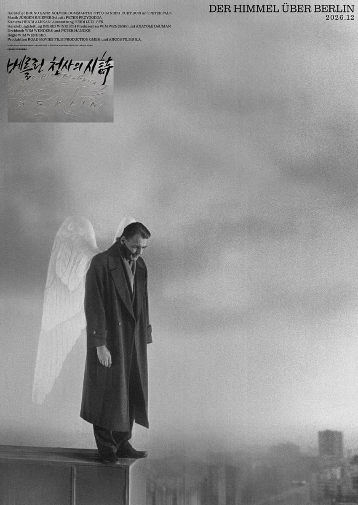
12월9일
빔 벤더스 감독 특별전
베를린 천사의 시 4K 리마스터링 재개봉
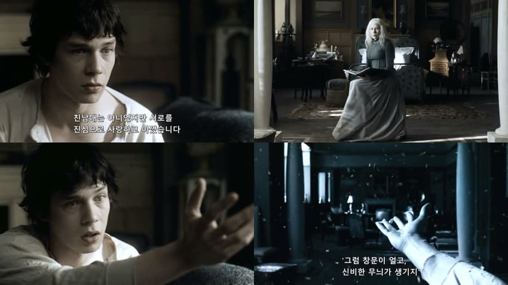
12월9일
20주년 기념 4K 리마스터링 재개봉
블라인드
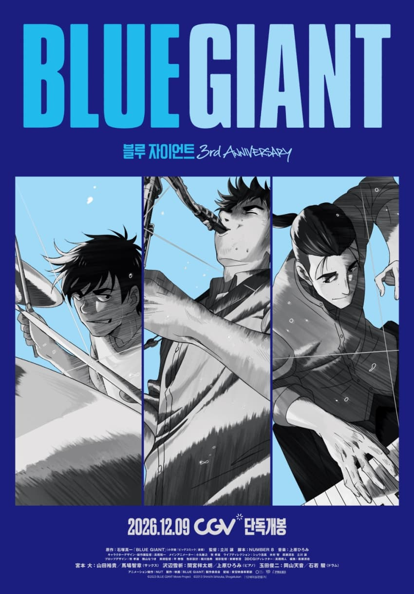
12월9일
블루 자이언트 CGV 단독 재개봉
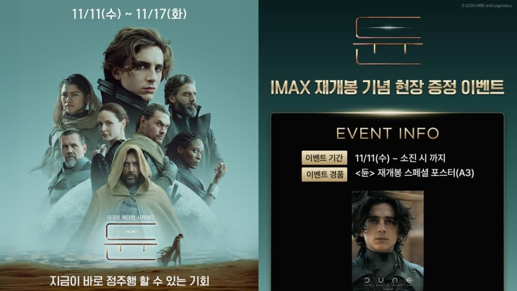
듄 파트3 개봉기념
드니 빌뇌브 듄 & 듄 파트2 아이맥스관 재개봉
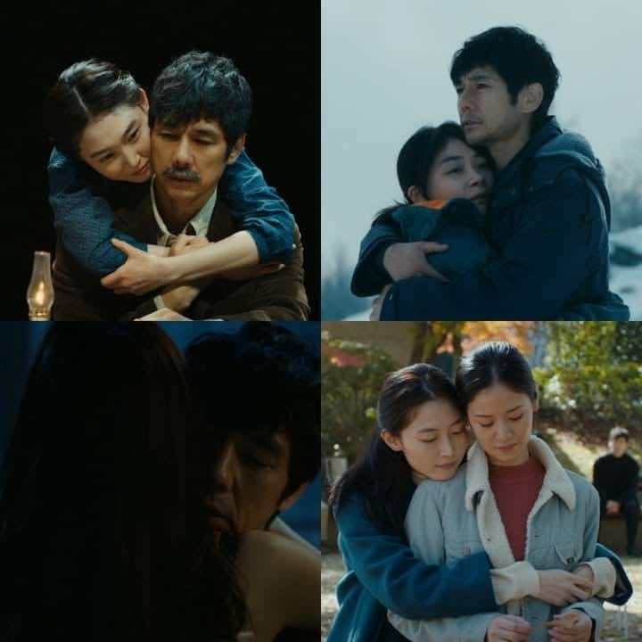
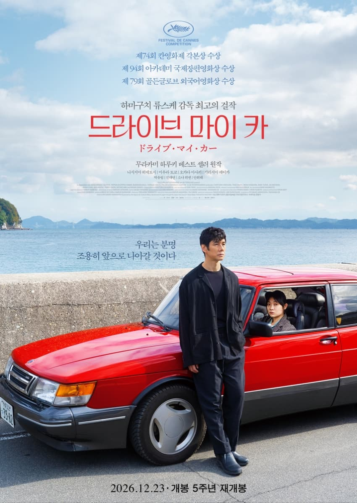
12월23일
하마구치 류스케 작품 개봉5주년
드라이브 마이 카
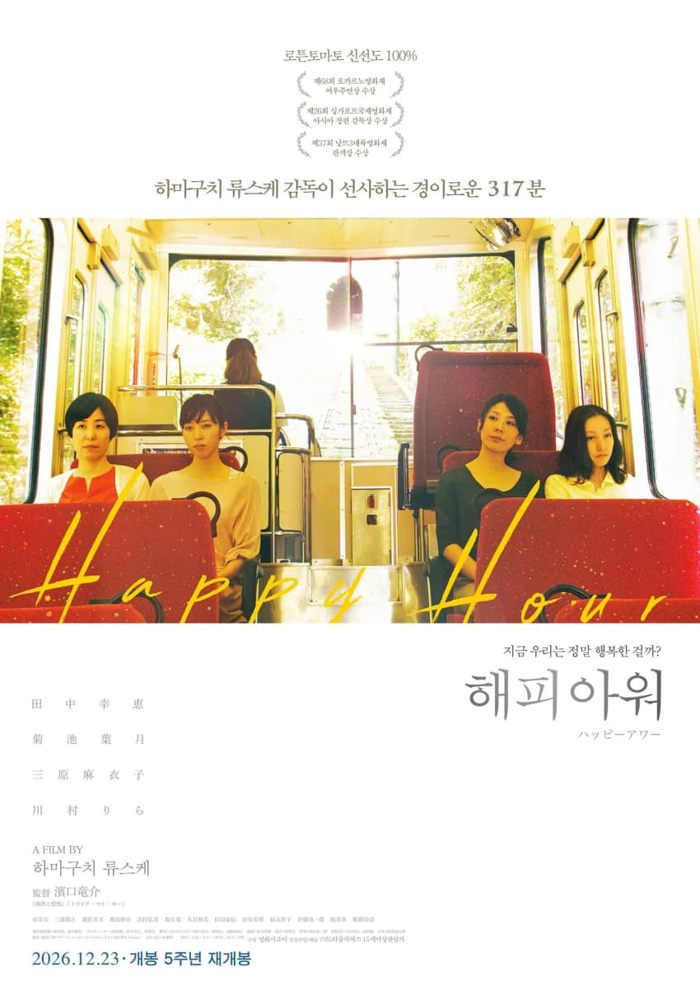
하마구치 류스케 작품5주년
해피 아워
댓글
수집 당시 댓글 70개
ㅇㅇ · 11.23 20:12:05
· SEX머신 · 11.25 09:06:10
누붕이1 · 11.23 20:14:13
러브디아즈 · 11.23 20:49:40
ㅇㅇ · 11.23 20:52:40
ㅇㅇ · 11.23 21:33:38
ㅇㅇ · 11.24 00:02:03
· ㅇㅇ · 11.25 08:20:15
봇치쟝 · 11.25 07:51:09
ㅇㅇ · 11.25 07:52:28
히이잉 · 11.25 07:53:10
ㅇㅇ · 11.25 07:54:13
봇 · 11.25 07:55:24
ㅇㅇ · 11.25 07:55:33
· ㅇㅇ · 11.25 08:07:37
아레아레 · 11.25 07:58:07
ㅇㅇ · 11.25 07:59:57
ㅇㅇ · 11.25 08:00:56
ㅇㅇ · 11.25 08:02:53
히이잉 · 11.25 08:19:11
ㅇㅇ · 11.25 08:20:31
· ㅇㅇ · 11.25 08:20:47
ㅇㅇ · 11.25 08:23:18
ㅇㅇ · 11.25 08:35:50
ㅇㅇ · 11.25 08:38:08
ㅇㅇ · 11.25 08:41:54
딸랑딸랑고추 · 11.25 08:42:20
· ㅇㅇ · 11.25 08:43:23
· 딸랑딸랑고추 · 11.25 08:46:09
· ㅇㅇ · 11.25 08:50:58
· 딸랑딸랑고추 · 11.25 08:57:09
· ㅇㅇ · 11.25 08:59:35
· 딸랑딸랑고추 · 11.25 09:00:34
· ㅇㅇ · 11.25 13:50:16
ㅇㅇ · 11.25 08:43:30
· ㅇㅇ · 11.25 09:37:42
ㅇㅇ · 11.25 08:47:45
ㅇㅇ · 11.25 08:49:18
ㅇㅇ · 11.25 08:52:01
ㅇㅇ · 11.25 08:57:13
ㅇㅇ · 11.25 08:57:26
히이잉 · 11.25 09:13:19
로리행보관 · 11.25 09:16:53
ㅇㅇ · 11.25 09:21:54
· 모두좋아해 · 11.25 09:41:49
· ㅇㅇ · 11.25 09:50:29
· ㅇㅇ · 11.25 13:16:40
ㅇㅇ · 11.25 09:36:28
ㅇㅇ · 11.25 09:42:20
ㅇㅇ · 11.25 09:49:56
ㅇㅇ · 11.25 09:54:26
ㅇㅇ · 11.25 10:31:02
OO · 11.25 11:38:50
ㅇㅇ · 11.25 11:40:17
· ㅇㅇ · 11.25 11:41:13
· ㅇㅇ · 11.25 13:17:55
ㅇㅇ · 11.25 12:48:02
VWVWV · 11.25 13:13:24
· ㅇㅇ · 11.25 13:25:40
ㅇㅇ · 11.25 13:48:54
ㅇㅇ · 11.25 15:17:06
ㅇㅇ · 11.25 15:35:12
ㅇㅇ · 11.25 15:56:09
원갈이 · 11.25 16:17:37
ㅇㅇ · 11.25 17:10:55
ㅇㅇ · 11.25 17:59:04
ㅇㅇ · 11.25 19:09:24
ㅇㅇ · 11.25 19:58:05
ㅇㅇ · 11.25 20:21:42
ㅇㅇ · 11.25 20:58:54